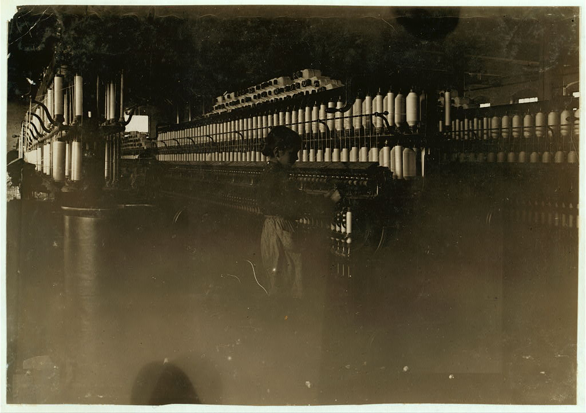
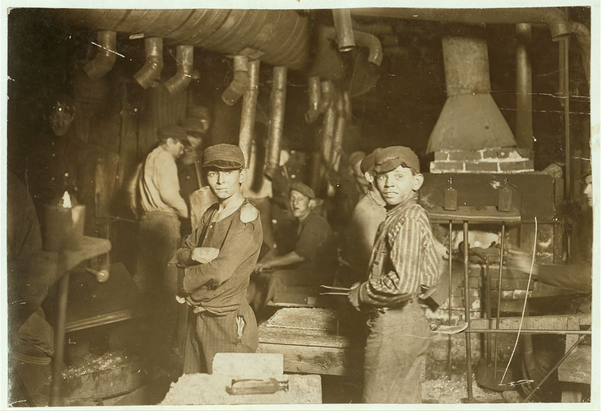
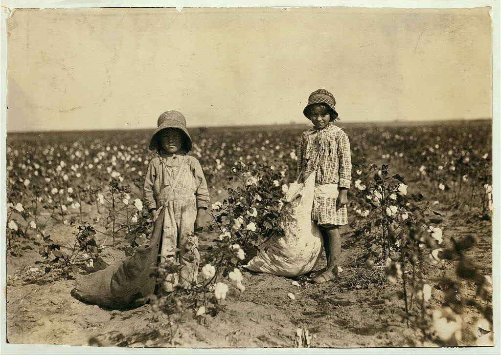

America in 1900: The Cost of Industrialization
By the turn of the century, industrial America had a child labor crisis:
- 1.75 million children under 16 employed (1900 census)
- Rising to 2 million by 1910
- Working in mills, mines, canneries, farms, city streets
- Low wages, dangerous conditions, no legal protections
The Progressive Response
In 1904, reformers founded the National Child Labor Committee to combat exploitation.
Their strategy:
- Investigate — send researchers into factories
- Document — gather statistical evidence
- Expose — publish reports, organize exhibitions
- Lobby — demand legislative reform
But they needed something more powerful than statistics...
Founded in 1904 by a coalition of Progressive reformers including social workers, settlement house leaders, clergy, and labor organizers. The NCLC received a congressional charter in 1907, giving it semi-official status.
Leadership:
Led by figures like Felix Adler (founder of the Ethical Culture movement), Florence Kelley (factory inspector and women's rights advocate), and Samuel McCune Lindsay (Columbia University professor).
Strategy:
The NCLC combined moral appeals with scientific evidence. They hired investigators to infiltrate workplaces, gathered testimony from children and parents, compiled statistics, and—crucially—commissioned photography to make the invisible visible.
Funding:
Supported by wealthy Progressive donors and foundations. This middle-class backing was both a strength (resources) and a limitation (reformers operated from outside working-class communities).
Lewis Hine: Sociologist with a Camera

Lewis Wickes Hine (1874–1940)
- Education: University of Chicago, Columbia University
- Training: Sociology under John Dewey
- Early career: Teacher at Ethical Culture School, NYC
- 1904–1909: Photographed immigrants at Ellis Island
- 1908: Hired by NCLC as investigative photographer
The Method: Undercover Investigation
Factory owners prohibited photography — it exposed what they wanted hidden.
Hine's infiltration tactics:
Disguises
- Fire inspector
- Bible salesman
- Postcard vendor
- Industrial photographer
Documentation
- Measured heights by vest buttons
- Took notes in coat pocket
- Recorded names, ages, wages
- Hauled 50 lbs of equipment
Every photograph was an act of courage — factory police frequently threatened him with violence.
"Social Photography"
"If I could tell the story in words, I wouldn't need to lug a camera."
— Lewis Hine
Hine called his approach "social photography":
- Photography as evidence — not art
- The camera as a lever for reform
- Making the invisible visible
- Generating empathy across class lines
The Scale of Documentation
5,100+
photographs for the NCLC
1908–1924
Documented:
- Textile mills across the Carolinas, Georgia, New England
- Coal mines in Pennsylvania, West Virginia
- Canneries along the Gulf Coast
- Glass factories in Indiana and Ohio
- Street trades in major cities
- Agricultural labor in Oklahoma, Texas, the South
Cotton Mill Spinner

Sadie Pfeifer, spinner. Lancaster, South Carolina, 1908.
Breaker Boys: Pennsylvania Coal

Breaker boys, Hughestown Borough Coal Co., Pennsylvania, 1911.
Addie Card, Age 12

Addie Card, 12 years old, spinner. North Pownal, Vermont, 1910.
Street Trades: Urban Child Labor

John Howell, newsboy. Indianapolis, 1908.
Carolina Cotton Mills
Young spinner, Carolina cotton mill, 1908.
Working the Night Shift
Boys working midnight shift, glass factory, Indiana, 1908.
Gulf Coast Canneries

Child shrimp pickers, Biloxi, Mississippi, 1911.
Alone in the Darkness

Trapper boy, Turkey Knob Mine, West Virginia, 1908.
Agricultural Child Labor
Young cotton picker, Oklahoma, 1916.
Over 5,100 Acts of Evidence

Child oyster shuckers, Dunbar Lopez & Dukate Company, Biloxi, Mississippi, 1911.
Every photograph an act of evidence — and an act of courage.
How the Photographs Were Used
The NCLC deployed Hine's images across multiple platforms:
- Exhibitions — traveling displays in churches, settlement houses, public halls
- "Magic lantern" slide shows — the PowerPoint of 1910, presented to civic groups
- Publications — newspapers, magazines, NCLC pamphlets and reports
- Legislative lobbying — presented to state legislatures and Congress
- Fundraising — used to generate donations for the NCLC
The strategy: make middle-class Americans see child labor as if the workers were their own children.
The Legislative Fight
Victories ✓
- Children's Bureau (1912) — federal agency to investigate child welfare
- State laws — minimum ages, hour limits, compulsory education
- Public opinion shift — child labor became morally unacceptable
Defeats ✗
- Keating-Owen Act (1916) — struck down by Supreme Court (1918)
- Second federal law (1919) — struck down by Supreme Court (1922)
- Child Labor Amendment (1924) — failed to achieve ratification
Why Did Empathy Fail to Produce Reform?
Hine's photographs crossed class lines emotionally — middle-class viewers saw their own children in those faces.
But courts protected employer power using liberty-of-contract doctrine and limited federal authority.
Child labor laws threatened structural economic power — and the judiciary blocked reform for two decades.
Federal child labor protections didn't survive until the Fair Labor Standards Act (1938) — after the New Deal transformed constitutional interpretation.
After the NCLC: Hine's Later Career
- World War I (1918): Photographed American Red Cross relief work in Europe
- 1920s-30s: Documented industrial workers for "work portraits" series
- Empire State Building (1931): Famous photographs of construction workers
- 1930s: Worked for Tennessee Valley Authority, WPA
- Financial struggles: Died in poverty (1940), work largely forgotten
- Rediscovery (1960s-70s): Recognized as pioneer of documentary photography
Hine's Historical Significance
Lewis Hine's work represents multiple innovations:
- Documentary photography as a tool for social reform
- Visual evidence in political advocacy and legislative lobbying
- Cross-class empathy through photographic representation
- Systematic documentation of hidden social problems
- Integration of sociological method with visual media
His photographs remain in active use today — teaching tools, historical evidence, artistic masterpieces, and moral arguments about the value of childhood.
The Power and Limits of Visual Evidence
"There were two things I wanted to do. I wanted to show the things that had to be corrected. I wanted to show the things that had to be appreciated."
— Lewis Hine
Hine succeeded at the first goal: his 5,100+ photographs made child labor visible and morally unacceptable to middle-class America.
But visibility alone wasn't enough. Legal reform required either elite cooperation or constitutional transformation.
The gap between empathy (1908–1916) and legislation (1938) reveals a fundamental truth: exposure can shift culture, but changing law requires structural power.
For Further Study
Lewis Hine Archive:
- Library of Congress: NCLC Collection (5,100+ digitized photographs)
Recommended Reading:
- Walter Rosenblum et al., America & Lewis Hine (1977)
- Kate Sampsell-Willmann, Lewis Hine as Social Critic (2009)
- Hugh D. Hindman, Child Labor: An American History (2002)
- Viviana Zelizer, Pricing the Priceless Child (1985)